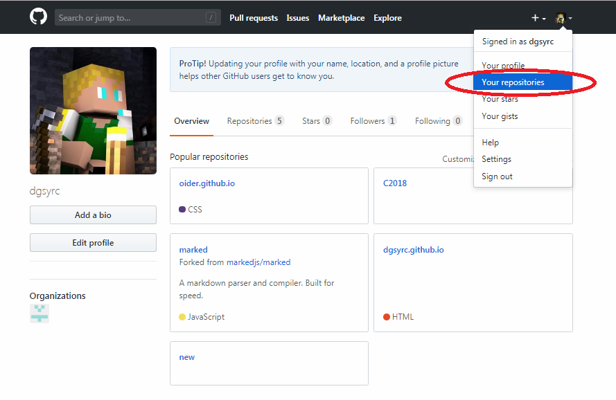
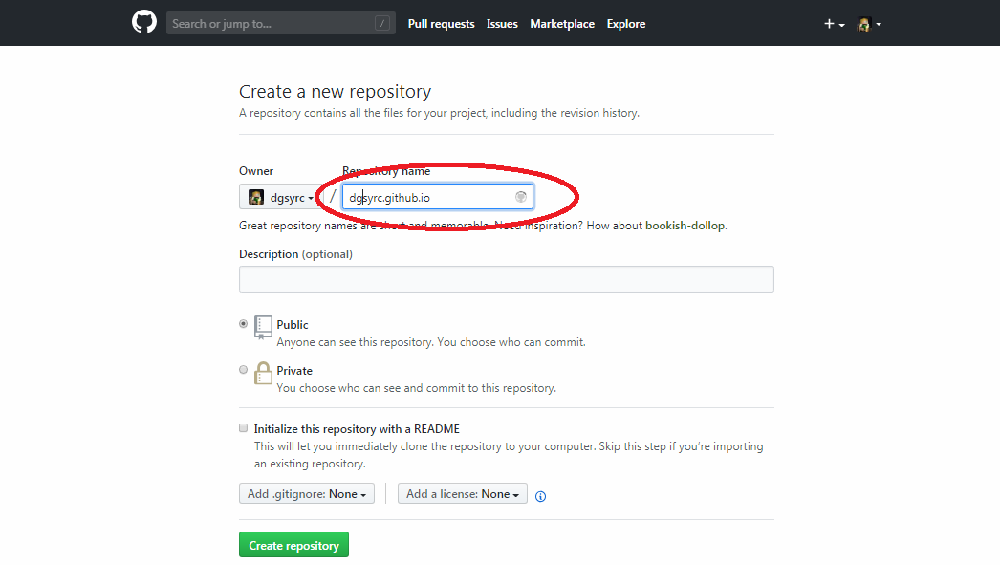
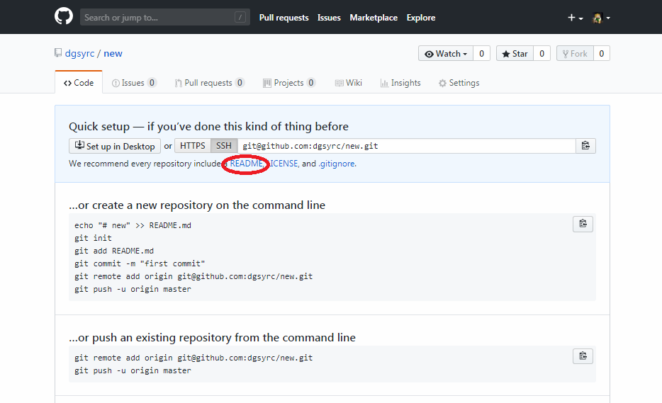
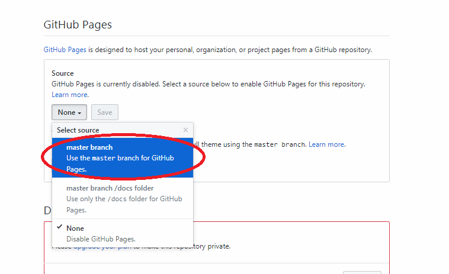
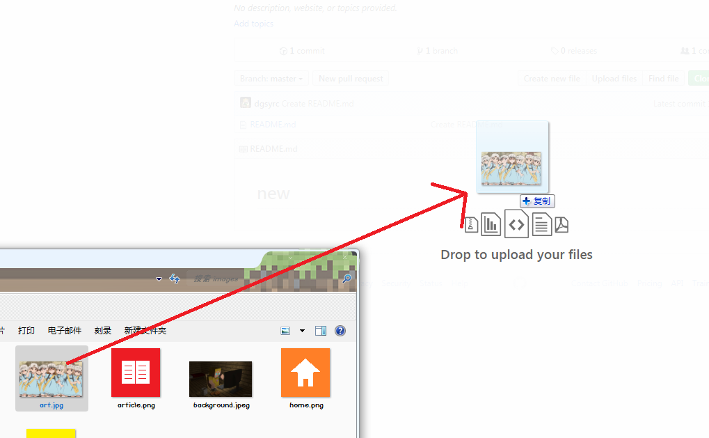

相信很多洛谷的伙伴们都很喜欢发图，发图最重要的是图床。
但是，现在我要介绍的是一种无水印原图的图床，我们要借助github这个平台来搭。
github的好处在于它会给每个用户分配一个域名，域名的分配规则是：
- 你的github用户名.github.io
注意：用户名尽量用英文。
翻译：
repositories 存储库
1.在github上注册一个账号后点击右上角的Your repositories:

2.进入repositories界面后点击new创建一个新的存储库，建议存储库命名为：你的github用户名.github.io（如果你已经使用了该存储库那就可以自定义，但是后面的图片链接会有一点不同）

3.创建成功后，先建立一个README文件

4.随后点击上方的Setting并往下拉，去到GitHub Pages设置项，把Source项设定为master branch（如若已设定好则不必改动）

5.最后就可以到存储库里存图了，上传会有几率失败，要多试几次
